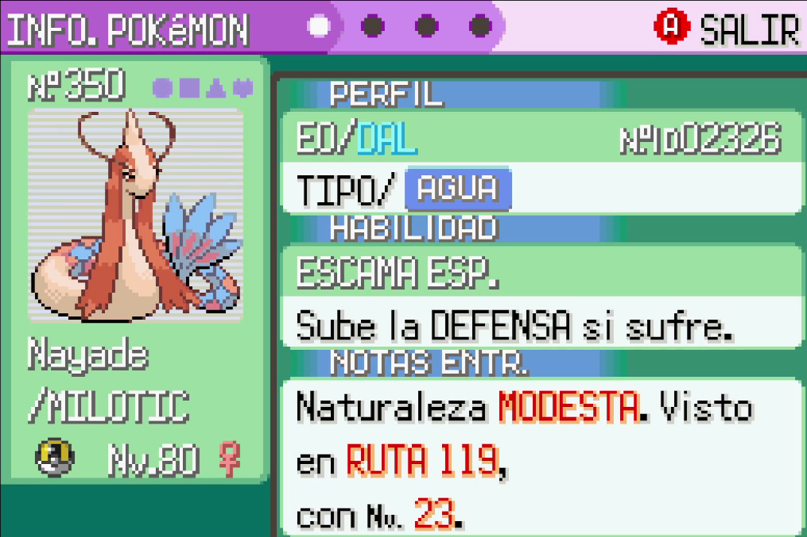

Éste es mi proyecto final de la Experiencia Educativa de Fundamentos de Tecnología Web, y como me dieron tema libre, dije: "Vamos a hacer algo de Pokémon"
Obviamente no haría una Pokédex Completa, eso sería demasiado incluso si hubiera hecho todo con tiempo, así que me puse a pensar en el tema del proyecto, y luego llegó a mi el recuerdo.
Hace ya un par de años, jugé Pokémon Esmeralda en un Emulador de la GameBoy Advance, y justo mientras estaba pasándome la historia, dije: "Vamos a probar suerte e intentar capturar un Feebas", los cuales son exageradamente raros, sin embargo, no tardé mucho en encontrar a uno, y la volví parte de mi equipo, la llamé Nayade

Como quería completar el juego lo más que mi paciencia me permitiece, quería ganar todos los diferentes tipos de Concursos, y para ello decidí usar a mi entonces Feebas, pero quería usarla únicamente a ella, así que me puse a investigar sobre los PokeCubos y cómo funciona el código al crearlos, e hice un documento de Excel para poder buscar las formas más óptimas de maximizar las estadísticas con los menos PokeCubos posibles
Esa es la base de mi proyecto, un documento de Excel que borré en cuando terminé el juego y que me inspiró a volver a hacer toda esa investigación en como un solo día para terminar un proyecto que procrastiné por semanas
El aspecto gráfico lo hice yo, por si no era notable ya, todo menos las impágenes, esas son sacadas directamente de los juegos de Pokémon, y el Logo, que lo hice en un generador de fuentes, además usé Gemini para apoyarme para ciertos aspectos del código, aunque no del diseño visual, en ese aspecto me ayudó más w3school